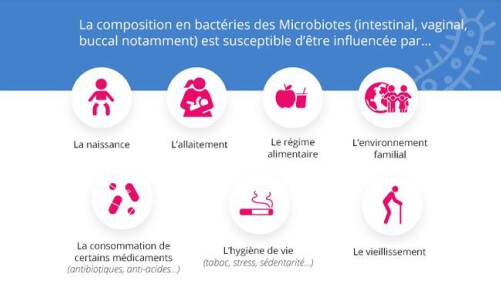

Les microbiotes, un équilibre fragile
Les 30 000 à 100 000 milliards de bactéries constituant notre
microbiote intestinal vivent en parfaite harmonie avec nous, leur hôte. Cette cohabitation porte le
nom
de symbiose. Chaque partie tire bénéfice de cette relation : notre organisme profite de cet
écosystème
complexe qui intervient dans différentes fonctions physiologiques (synthèse de vitamines, rôle
métabolique, immunitaire...), et les bactéries trouvent au niveau de l’intestinun environnement
riche en
éléments nutritifs garantissant leur croissance.
Un microbiote unique qui se façonne dès la période
fœtale
Chaque individu a un microbiote unique, qui lui est
propre,
et qui
s’est constitué peu à peu sous l’influence de différents facteurs génétiques et environnementaux.
A côté des facteurs génétiques, la grossesse puis l’accouchement vont avoir un
rôle
déterminant sur
l’implantation des premiers microorganismes de la flore intestinale.
Durant la grossesse, les bactéries intestinales de la maman passent en effet vers le
futur
bébé via le
placenta. Puis, le mode d’accouchement, par voie basse, mettant en contact le nourrisson avec la flore
vaginale et intestinale de la maman, ou par césarienne, va directement influencer la diversité du
microbiote
intestinal du nourrisson.
La composition du microbiote va ensuite être déterminée de façon majeure par l’alimentation. Depuis le
choix
du type d’allaitement, au sein ou au biberon, jusqu’à nos habitudes alimentaires à l’âge à l’adulte,
l’alimentation joue tout au long de la vie un rôle fondamental sur la qualité et l’équilibre du
microbiote
intestinal. Fait important, on sait que c’est essentiellement au cours de la vie fœtale et
durant les 2
premières années de vie d’un nourrisson que se met en place la plus grande partie de la flore
intestinale
qui joue un rôle majeur dans la mise en place des défenses immunitaires (voir Etat des lieux de la
recherche
et des connaissances).
Sous l’influence de nombreux facteurs, parfois
délétères

A côté de l’alimentation, d’autres facteurs extérieurs, dépendants de nos habitudes de
vie,
vont venir
moduler de manière plus ou moins favorable la diversité et la qualité de la flore intestinale.
Certains de ces facteurs, susceptibles d’agresser la flore bactérienne et d’être à
l’origine d’une dysbiose,
c'est-à-dire d’un déséquilibre du microbiote néfaste pour l’organisme, sont bien connus :
infections et en
particulier infections digestives (la gastroentérite par exemple), stress, certains médicaments
(antibiotiques, anti-inflammatoires, inhibiteurs de la pompe à protons ou IPP indiqués dans les brûlures
d’estomac...), polluants environnementaux, « toxiques » comme l’alcool, le tabac, les drogues...
Jusqu’à un certain point, notre microbiote a la capacité de résister à ces agressions et de
revenir à son état
« normal » après quelques semaines ou mois : c’est la notion de résilience du
microbiote.
Mais face à des
agressions répétées, la dysbiose est susceptible de perdurer et d’impacter négativement sur notre santé.
l'entretien de
son microbiote intestinal →